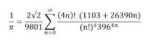

The equation above is known as the Euler's Identity. It is considered one of the most beautiful equation in mathematics.
Now, let's take a quick look at this
Unlike Euler's Identity, mathematicians rated this formula as ugly.
This was an experiment conducted at University College London.
It turns out, when mathematicians see the formulas rated as beautiful the emotional part of their brain activates! And the pattern was pretty consistent.
But... why?
Isn't beauty a subjective concept? How could something so abstract as Math be beautiful?
Let's talk about Mathematical beauty now. When Mathematicians say something is beautiful, it means that concept has certain Properties.
Those are:
Mathematicians are "fans" of the same genre. Although it's true that beauty is a subjective concept, the judgement of mathematical beauty is surprisingly similar.
Mathematicians love this abstractness of mathematics.
So why even care about mathematical beauty? Why is it so important
For Mathematicians, it's motivation. Mathematical beauty is the motivation behind all Mathematician.
For non-Mathematicians, finding mathematical beauty positively impact their mathematical view, which overall motivates them to explore the subject deeper.
The beauty of mathematics can be found during the process of succinct approach to a problem or when an exciting breakthrough in a problem is made.